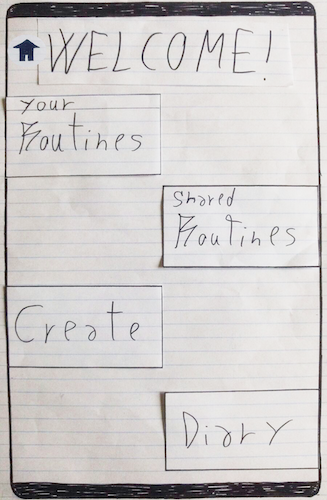
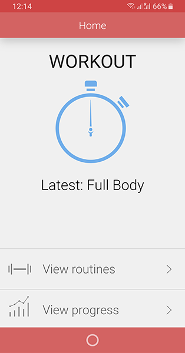

About the projects
During my time at The irish Times, I have been involved in a number of major projects, both for
internal technologies and customer facing solutions.
I am part of a diverse, multi-cultural team and we regularly did design workshops, user research,
and idea scoping sessions.
We are also a multi-disciplinary team, which means our duties don’t just cover UX Research and
Design, but also branding, UI Design and front-end development.
My Role
My role changed depending on the project, but being that my strengths as lie more towards coding and
front-end development,
I often find myself involved in projects that require good technical knowledge.
The following are some of the larger projects I was involved in:


Listen
The testing strategy I devised was conical: I started validating base assumptions
through
informal interviews, unspecific questions about the overall subject and anecdotal data
from users.
Once these base requirements were defined, I moved on to more specific questionnaires
and interviews,
and finally to interaction testing with prototypes and user trials.
A number of initial lo fidelity prototypes and flows were created based on the initial
requirements,
and then tested with Pop. These where hand sketches created during brain storming and
"Crazy 8"
sessions.
Higher fidelity prototypes were used for the final interaction testing and user trials:
these were
created
with adobe illustrator and tested with InVision.
ePaper
Once the correct flow and interface layout was established, the high fidelity designs
were improved on.
I was still new to design at this time, and I knew I needed to improve on the initial
version of my
interface.
I drew quite a lot of inspiration from Google's Material Design, but aimed to give my
work a personal
twist, such as
the highlighted edges on cards, the 45 degree angle lighting and the unique animations.

Re-Desgns
The testing strategy I devised was conical: I started validating base assumptions
through
informal interviews, unspecific questions about the overall subject and anecdotal data
from users.
Once these base requirements were defined, I moved on to more specific questionnaires
and interviews,
and finally to interaction testing with prototypes and user trials.
A number of initial lo fidelity prototypes and flows were created based on the initial
requirements,
and then tested with Pop. These where hand sketches created during brain storming and
"Crazy 8"
sessions.
Higher fidelity prototypes were used for the final interaction testing and user trials:
these were
created
with adobe illustrator and tested with InVision.
What I learnt
The main takeaways from this project were to never assume the user knows what to do:
You are not your user. From atechnical point of view, I learnt a number of key skills
That would help me later in my career when asked to carry out front end tasks.
This project definitely helped me get a headstart in my career, and gave me the necessary tools
to start my first job with confidence.

Back